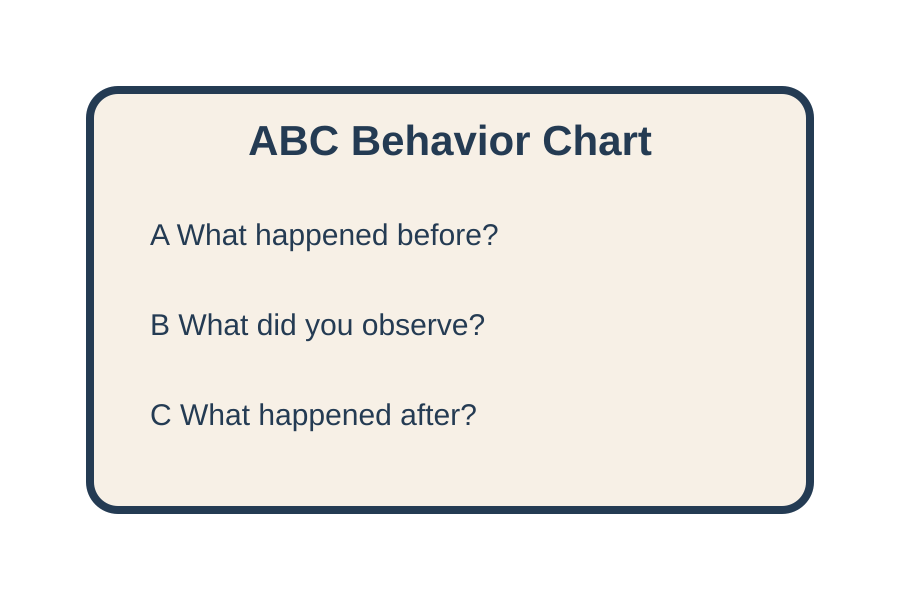
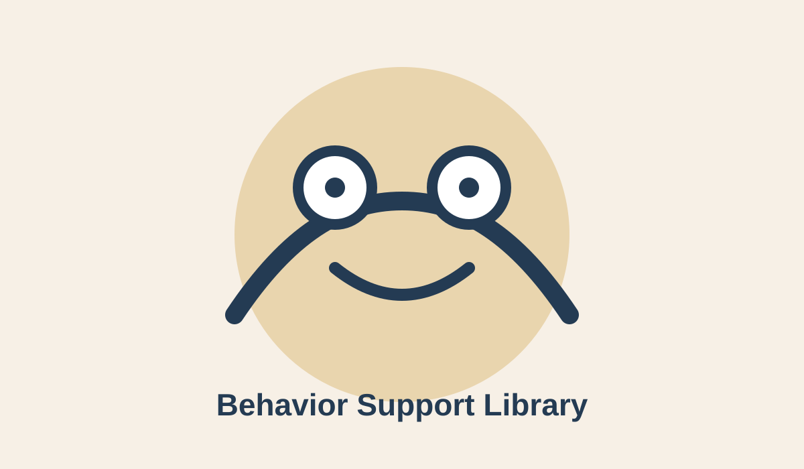
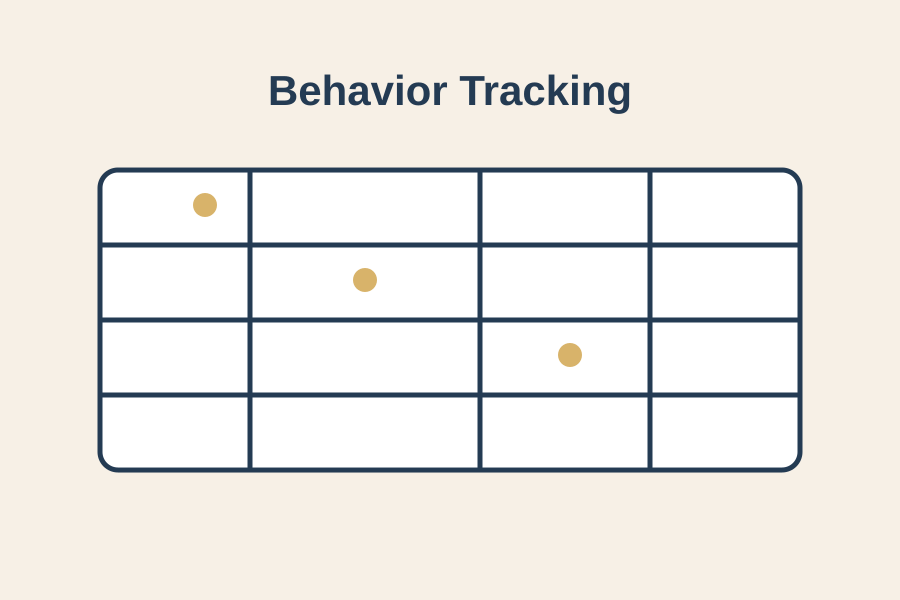
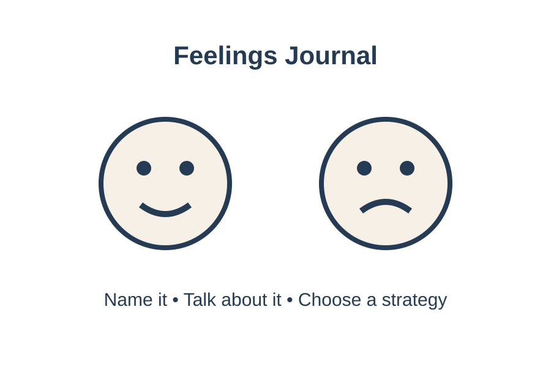
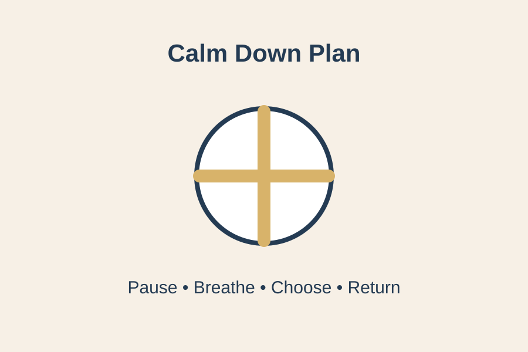
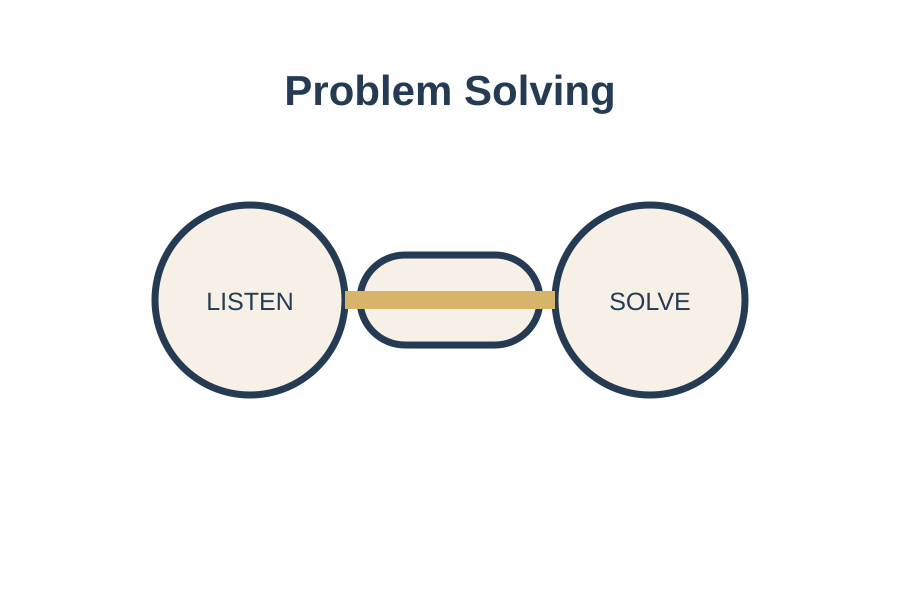
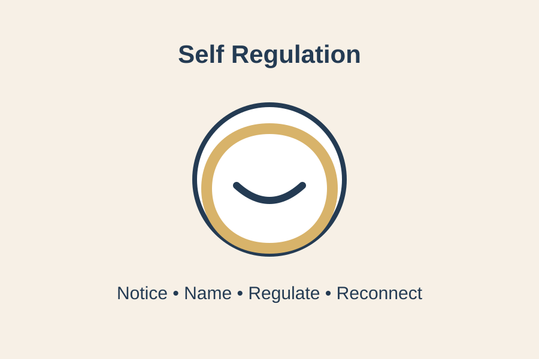

👀 ABC Behavior Chart
Document what happens before, during, and after behaviors.
Access positive guidance resources, behavior support tools, social emotional learning materials, documentation forms, and classroom strategies designed for Early Head Start, Head Start, Preschool, and Pre-K educators.

The Behavior Resource Library provides educators with practical tools to understand children's behavior, document classroom experiences, support emotional development, and create positive learning environments where children feel safe, valued, and supported.
Young children are still learning communication, impulse control, flexibility, and emotional regulation. Respond to challenging behavior with safety, connection, clear limits, and instruction. The goal is to teach the skills children need, not to label a child as bad.
Use predictable routines, visual cues, transition warnings, accessible materials, and enough space to reduce avoidable frustration.
Stay calm, get to the child's level when appropriate, acknowledge the feeling, and help the child return to a safe, ready-to-learn state.
Model and practice what to do instead: ask for a turn, request help or a break, use words or communication supports, and solve problems with support.
Record what happened before and after the behavior, the context, and which supports helped. Look for communication, sensory, relationship, and environmental needs without assuming intent.
Start with the child's strengths, listen to family knowledge, agree on consistent supports, and review progress together. Involve program specialists when additional support is needed.
When a pattern persists or affects safety and participation, collaborate with families and appropriate program professionals on a written support plan and a review date.
Important: Avoid humiliation, threats, physical punishment, or consequences that exclude a child from learning as a behavior-management shortcut. Follow your program's policies and applicable requirements, and seek qualified support when safety or developmental concerns persist.
Head Start: Social Emotional Learning → Understanding and Managing Children's Behaviors → Explore the ELOF →
Find practical classroom tools that help educators understand behavior, support children's emotions, and create positive learning environments.
Document children's behaviors, interactions, triggers, interests, and classroom experiences through meaningful observation.
View Tools →Record behavior patterns, classroom situations, teacher responses, and support strategies.
View Forms →Support emotions, friendships, communication, self awareness, and emotional development.
Explore Resources →Create predictable routines, visual supports, expectations, and positive learning environments.
View Tools →Help children solve problems, develop social skills, and learn appropriate classroom behaviors.
Explore Guidance →Support calming strategies, emotional awareness, coping skills, and independence.
View Resources →Plan access, communication supports, individualized adaptations, and collaboration with specialists and families.
Open Inclusion Guide →Print and use the Behavior Support Toolkit for observation, positive guidance, social emotional learning, and self regulation planning.

Document what happens before, during, and after behaviors.

Track classroom behaviors, patterns, supports, and progress over time.
Review practical ways to improve participation, adapt activities, support communication, and coordinate with families and specialists.

Help children identify emotions, express feelings, and develop emotional awareness.

Support children with calming strategies, emotional regulation, and problem solving.

Guide children through communication, friendship challenges, and peaceful conflict resolution.

Provide strategies that build independence, coping skills, and emotional control.
Find developmentally appropriate behavior and social emotional resources for different early childhood learning stages.
Support communication, relationships, routines, sensory needs, and emerging emotional development.
Explore Resources →Support independence, friendships, emotional expression, classroom routines, and problem solving.
Explore Resources →Support self regulation, cooperation, communication, responsibility, and school readiness.
Explore Resources →The Behavior Support Toolkit includes reflection, planning, routine, feelings, friendship, and self regulation pages.
Reflect on classroom situations, children's needs, responses, and next steps.
Print Tool →Create strengths based support strategies, document observations, teach replacement skills, and review progress with families.
Open Printable Plan →Teach cooperation, kindness, turn taking, and positive peer relationships.
Print Tool →Plan intentional opportunities to build coping skills and independence.
Print Tool →